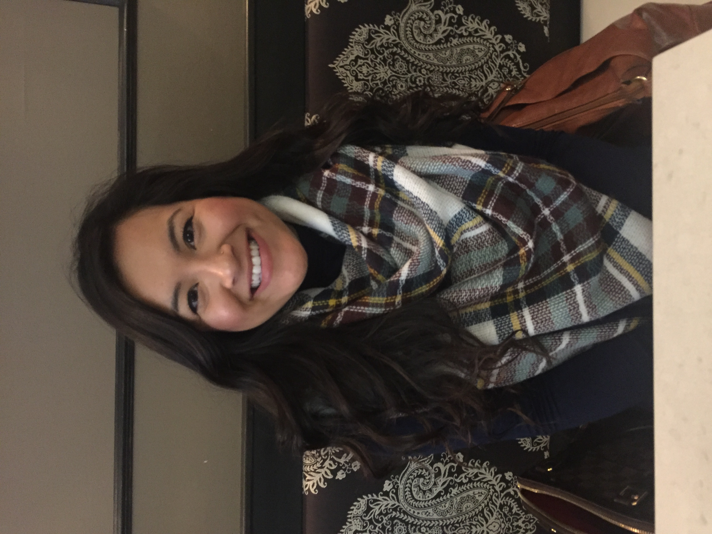

About Me
` She was born on a sunny Friday in May in 1992. Growing up on farmland of Muncy, Pennsylvania (population of 2,500), she enjoyed living the small town life. After graduating high school, she went on to Ursinus College (Collegeville, Pennsylvania) to study Chemistry and Spanish. She then accepted a Chemist position at Philadelphia Energy Solutions upon graduation.
She now currently resides in the Graduate Hospital neighborhood of Philadelphia with her two roommates. She spends her free time volunteering in STEM education teaching science to kids in elementary schools with low funding. She also loves to read Harry Potter and is an avid Philadelphia Eagles fan.